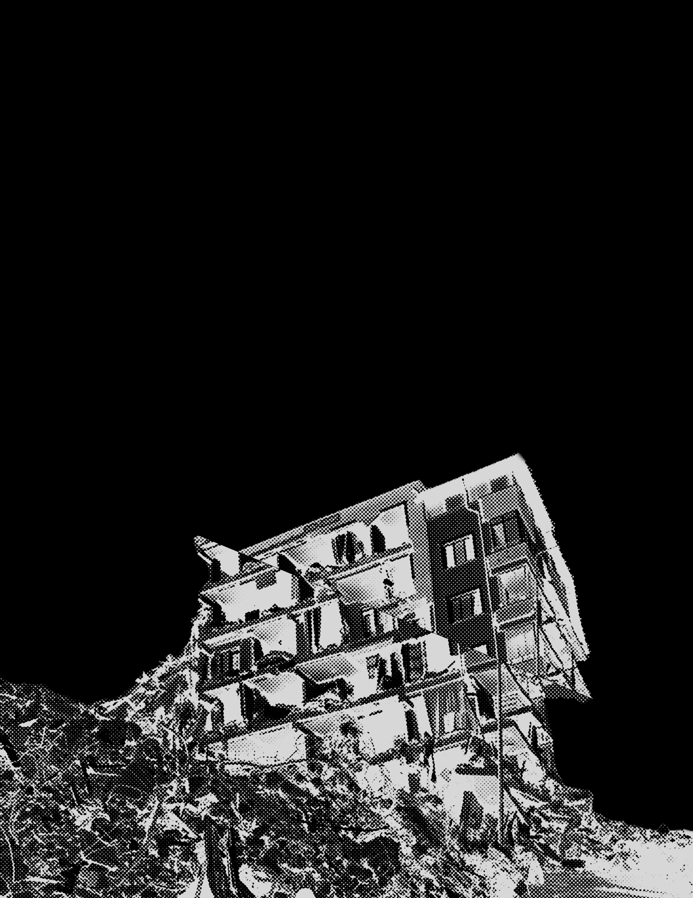
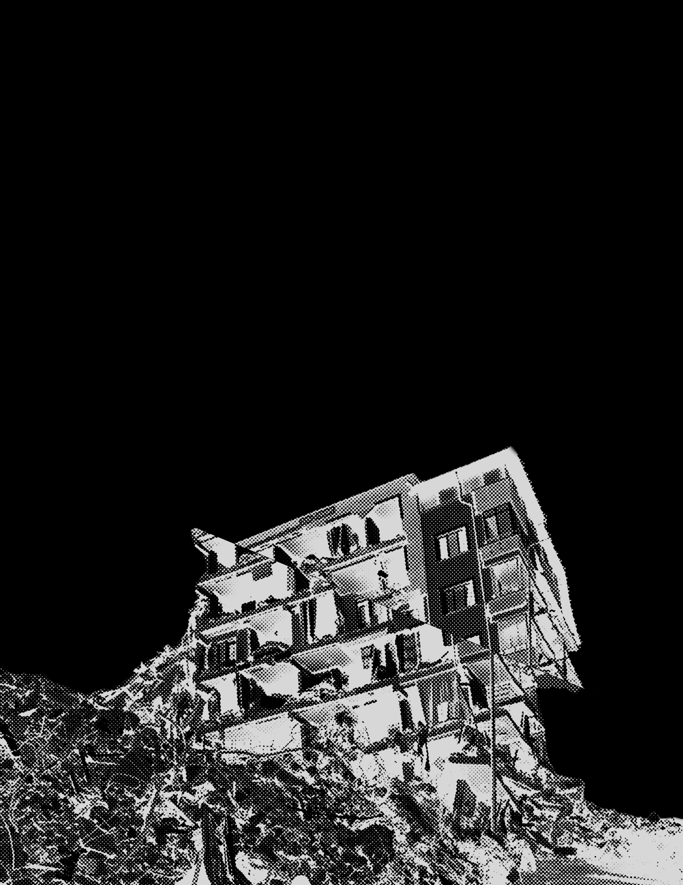

The world was rocked by multiple natural disasters, causing widespread destruction and suffering. Despite
historical tensions and conflicts, countries came together in a show of unity and compassion to offer aid
and support to those affected. Borders were temporarily forgotten as nations, previously seen as enemies,
worked together to provide resources and assistance.
This unexpected display of cooperation and unity demonstrated the common humanity that exists across borders
and political divides. In the face of devastating events, people set aside their differences and came
together to help their fellow human beings. This showed the world that even in the darkest of times, there
is hope for unity and compassion.
The outpouring of support from countries around the world served as a reminder of the power of collective
action and the importance of working together to overcome adversity. The events of this natural disaster
showed that, when faced with a common challenge, people can come together to make a difference and bring
hope to those in need.
The idea of unity inspired certain groups to form a single nation, leading to protests and revolutions
worldwide to break down political borders. The first union nation, "Tunel," was formed and included regions
starting from northwest Bosnia, through Turkey, Azerbaijan, across the Caspian Sea to the northeast of
Uzbekistan and Turkmenistan.
Though some countries perceived the formation of "Tunel" as a threat, some got inspired and formed a single
state among Scandinavia/ the United States, Greenland and Canada/ Russia, Kazakhstan, and Mongolia/ and
Australia, Papua New Guinea, Fiji, New Zealand, and New Caledonia. All these got united under RNU (Roofed
Nations Union).
 
